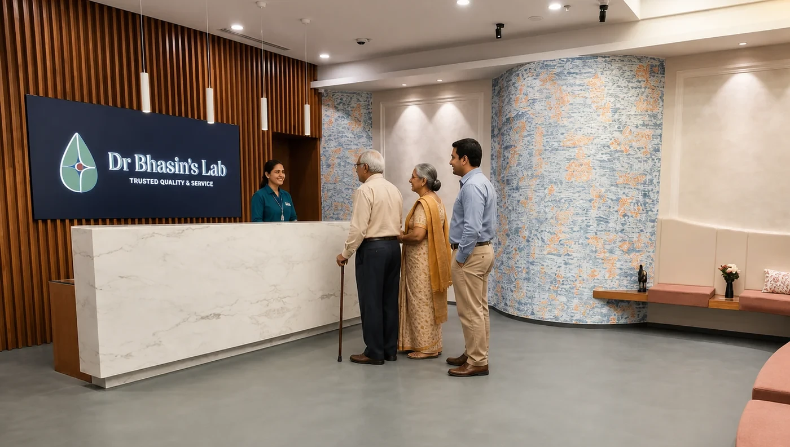
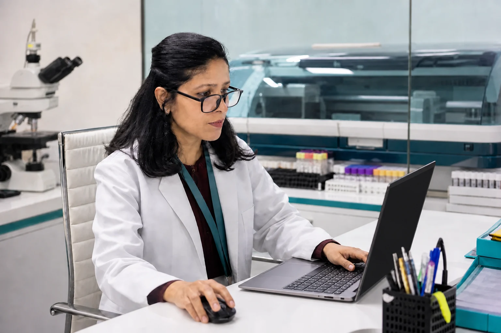

Your doctor wants a test or repeat test urgently
A treating doctor may want a parameter checked or repeated within hours rather than waiting for the next morning.
Need a blood test or urgent report, day or night?
Walk into Dr Bhasin’s Lab at any hour without prior booking. Laboratory testing continues through the night, and tests on our Standard Urgent menu are reported within 3 hours of sample collection—24×7×365.
Delhi NCR’s only pathology laboratory offering this combination of 24×7 walk-in testing, overnight processing, doctor-reported results and a defined 3-hour urgent test menu.

Yes. Dr Bhasin's Lab in Greater Kailash-I (GK-I), South Delhi, is open 24×7, every day of the year. Walk in at any hour without an appointment. Tests on our Standard Urgent menu are reported within 3 hours of sample collection, even at night, by qualified laboratory doctors, with no extra charge for urgent or night-time testing.
Key facts
For us, “open 24×7” does not mean a reception desk stays open while samples wait for morning. The laboratory workflow continues through the night.
Reach our Greater Kailash-I laboratory at any hour without prior booking.
Eligible blood and other pathology samples can be collected during the night.
Biochemistry, haematology, clinical pathology, serology and selected molecular testing continue overnight.
Reports issued at night are medically reported by qualified laboratory doctors, just as during the day.
Eligible urgent reports are released during the night instead of waiting for the next morning.
Urgent reporting is not only a night-time service. Use the finder below to check how we handle your test.
Walk in at any time for most tests in this category. Tests that need preparation or a timed sample are grouped separately: call 93111 93111 before you come. The report is ready within 3 hours of the sample being taken.
These tests may also be available on an urgent basis. Please confirm availability and the exact urgent reporting time with the lab at the time of sample collection.
The finder uses the laboratory’s current urgent test list supplied for this page. If you cannot find a test, call the 24×7 team.
Tests in this list are reported within 3 hours of sample collection, 24×7×365. For most of them you can walk in at any hour without calling first. Tests that need fasting, timed samples or a 24-hour urine collection still need that preparation first, so they are grouped separately at the end of this list: call 93111 93111 before you come.
Walk in at any hour (224)
Call 93111 93111 before you come: needs preparation or a timed sample (33)
These tests need fasting, a timed sample or a 24-hour urine collection. Call 93111 93111 before you come so the lab can tell you how to prepare. The report is ready within 3 hours of the sample being taken.
Urgent reporting may be available. Please confirm availability and the exact urgent reporting time at sample collection.
Confirm at sample collection (61)
Call 93111 93111 before you come: needs preparation or a timed sample (10)
These tests need fasting, a timed sample or a 24-hour urine collection. Call 93111 93111 before you come so the lab can tell you how to prepare and confirm the reporting time.
For test details and preparation, browse the test library.
The need may be medical—or simply time-critical. These are common situations in which access to testing and reporting beyond normal working hours matters.
A treating doctor may want a parameter checked or repeated within hours rather than waiting for the next morning.
You have been medically evaluated and laboratory investigations have been requested the same day or night.
Your doctor has asked for a laboratory value to be repeated within a short interval for clinical follow-up.
A required laboratory investigation is still pending before a planned early-morning procedure, surgery or admission.
Some specimens, including microbiology samples, benefit from entering the laboratory workflow promptly even though the final result may take longer.
You discover late in the day that the doctor expects an investigation before an early appointment or admission.
One investigation was omitted, or an unsuitable earlier specimen needs recollection before the next appointment.
A laboratory report is needed for travel, fitness, insurance or another institutional deadline and normal working hours are not enough.
For a medical emergency requiring immediate treatment, go to an appropriate hospital emergency department. A pathology laboratory provides diagnostic testing and does not replace emergency medical care.
The clock changes. Our reporting responsibility does not.

The exact test menu varies by investigation, but multiple core laboratory disciplines remain operational overnight.
Routine chemistry and many urgent chemistry investigations continue overnight.
Eligible haematology and coagulation investigations can be processed during the night.
Eligible urine, fluid and related pathology testing can enter the overnight workflow.
Selected serological investigations continue based on the test and laboratory workflow.
Some molecular investigations are available overnight; test-specific availability should be confirmed.
Appropriate processing and incubation for eligible culture specimens can begin during the night.
A culture sample submitted at night may still require 48 hours or longer for its final result, depending on the specimen and organism. However, appropriate initial processing and incubation can begin during the night instead of simply waiting for the next working day.
This is why a genuinely operational night laboratory can matter even when the final test result is not a “3-hour report”.
No. The laboratory is open 24×7, but certain procedure-dependent or specially scheduled services are not collected throughout the night.
Home collection has different operating hours from the laboratory and is not currently offered after midnight.
See home collection serviceHospital samples can be collected through overnight logistics, eligible investigations can be processed during the night, and urgent reports can be medically reported and released overnight according to the test’s urgent pathway.
No prior booking is needed for most Standard Urgent tests or routine eligible walk-in testing. For tests that need preparation, call 93111 93111 before you come.
Patients come to us at all hours from Greater Kailash II, Kailash Colony, CR Park, Kalkaji, Lajpat Nagar, Defence Colony, Malviya Nagar, Saket, Okhla and New Friends Colony, and from across South and Central Delhi, including INA, Kidwai Nagar, the AIIMS area, Safdarjung Enclave, Lodi Colony, Golf Links, Sunder Nagar and Vasant Vihar.
Read our Google reviews
Parking, lift and accessibility details: contact the lab.
Search the urgent menu above or call with the test name if it is in the confirm-at-collection category.
Yes. Dr Bhasin's Lab in Greater Kailash-I, South Delhi is open 24×7×365. Eligible walk-in testing is available without prior booking. For tests on the Standard Urgent menu, the report is ready within 3 hours of the sample being taken.
Laboratory processing continues through the night across multiple disciplines. Eligible urgent tests are processed and reported at night rather than waiting for the next morning.
Yes. Eligible urgent reports are issued during night hours. For Standard Urgent tests, the report is ready within 3 hours of the sample being taken, 24×7×365.
Yes. Reports issued at night continue to be medically reported by qualified laboratory doctors, maintaining the same reporting responsibility as during daytime operations.
There's no extra charge for urgent tests or for tests done at night.
For most tests listed as Standard Urgent, no. You can walk in at any time, and the report is ready within 3 hours of the sample being taken. Tests that need fasting, timed samples or a 24-hour urine collection are grouped separately on the list: call 93111 93111 before you come.
These tests may be available on an urgent basis, but availability and the exact urgent reporting time must be confirmed with the laboratory at the time of sample collection.
No. The physical laboratory and call centre operate 24×7. Home collection runs from 6 AM to midnight across Delhi and NCR, while hospital sample logistics continue through the night.
No. Cultures require their normal biological incubation and reporting time. However, appropriate processing and incubation of eligible culture samples can begin during the night rather than waiting for the following morning.
No. Certain services such as semen analysis and FNAC are not collected as unrestricted night-time walk-ins, and some specialised tests require availability confirmation. Call the 24×7 team for test-specific guidance.
Day or night, you do not have to wait for normal laboratory hours.
Walk into Greater Kailash-I, search the urgent test menu, or call the 24×7 laboratory team.